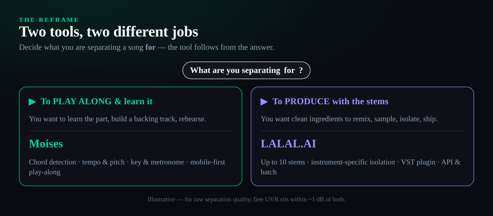
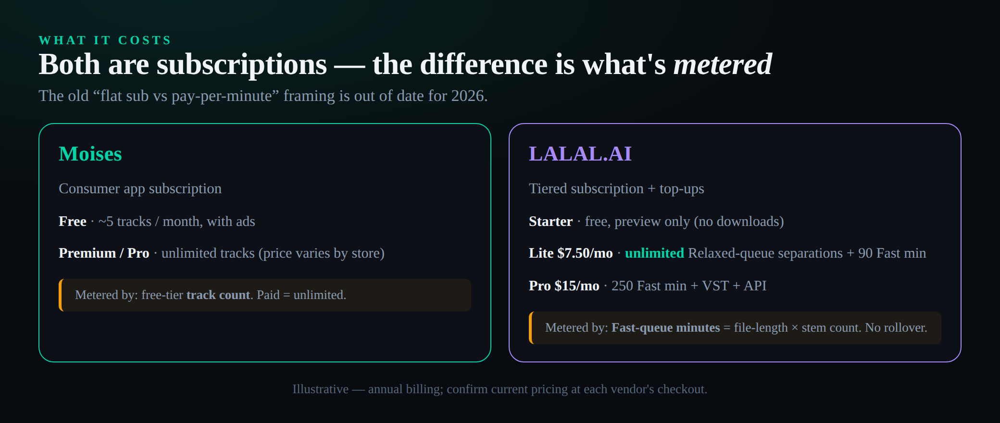
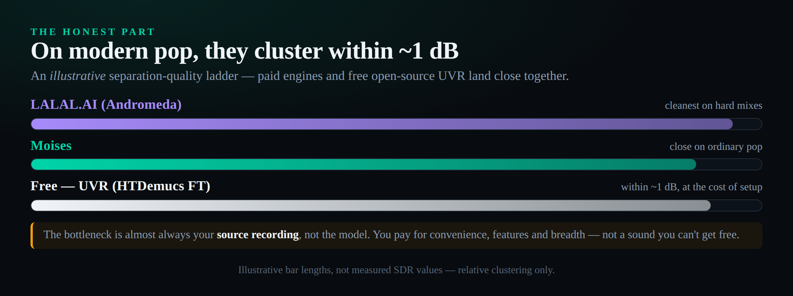

The short answer
These two tools look like rivals and barely compete. Moises is a practice and creation companion — mobile-first, with chord and key detection, tempo and pitch control wrapped around its stem separation, built for learning and playing along with a song. LALAL.AI is a surgical extraction engine — up to ten stems including instrument-specific piano, guitar, synth and strings, plus a VST plugin and an API for production pipelines. Pick Moises if you are separating a track to play along with and learn it; pick LALAL.AI if you are separating it to produce with the stems. And know the honest part up front: for raw separation quality, the free open-source Ultimate Vocal Remover sits within about a decibel of both, so you are paying for convenience, features and breadth — not a sound you cannot get free. We score them 8.8 for Moises and 9.0 for LALAL.AI, each as the best version of the different job it does.
Search “moises vs lalal” and you will find a dozen listicles that line the two up feature-by-feature as though they were the same product in two boxes. They are not. One is a phone app you open to slow a song down and see its chords; the other is a browser-and-desktop engine you point at a track to pull a clean piano line out of it. Comparing them on a single “which separates better” axis misses the point as badly as comparing a metronome to a mastering plugin. The useful question is not which tool wins, but which job you are doing — and once you know that, the choice is usually obvious. This guide is built around that idea, and if you want the ground-level mechanics first, our AI stem separation guide explains how neural separation works before you spend a cent.
What stem separation actually does
Stem separation takes a finished stereo mix — a song where everything is already blended together — and pulls it back apart into its component parts: vocals here, drums there, bass, and so on. There is no hidden multitrack inside an MP3; the original separate recordings are gone the moment a song is bounced down. What modern tools do instead is estimate those parts, using neural networks trained on millions of songs to recognise what a vocal, a kick or a piano looks like in a spectrogram and to reconstruct each one as cleanly as possible. It is a remarkable trick, and over the last few years it has gone from a research curiosity to something you can run from your phone in under a minute.
Because it is estimation rather than recall, quality varies with the material. A sparse, well-recorded pop song separates beautifully; a dense, distorted, heavily compressed mix fights back, leaving artefacts — smeared transients, a faint ghost of the vocal in the instrumental, a watery quality on sustained notes. Every tool in this comparison, free or paid, hits the same wall on hard material, because they are all solving the same underlying problem with broadly similar mathematics. That shared ceiling matters, and we come back to it, because it is the reason the price you pay buys features and convenience far more than it buys a better-sounding stem. If your goal is specifically pulling vocals out, our walkthrough on how to remove vocals from a song covers the settings that matter most.
The 2026 landscape is a handful of competing neural architectures converging on broadly similar results. The open-source world standardised on Demucs and its hybrid-transformer descendants; the commercial services train their own variants on larger private datasets and ensemble several models together for the final pass. The practical upshot for a buyer is counter-intuitive — the gap between the best free model and the best paid one has been shrinking every year, not widening, because everyone is climbing the same curve toward the same ceiling. A separation that would have sounded watery and artefact-ridden a few years ago now comes out usable from a phone, and the marginal decibel of cleanliness that separates the leaders is audible mainly on the hardest material. That is the single most important thing to understand before you reach for your wallet, and it is why this comparison spends as much time on what each tool does around the separation as on the separation itself.
Two tools, two different jobs
Here is the spine of the whole comparison. Moises and LALAL.AI are both built on excellent separation, but they wrap that separation in completely different products aimed at completely different people.
Moises is the musician’s app. Open it on your phone, drop in a song, and it does not just hand you stems — it shows you the chords as they pass, lets you slow the track to half speed without dropping the pitch, transposes it into a friendlier key, and gives you a count-in metronome so you can play along. The stem separation is the engine, but the point is practice: learning a part, building a backing track, rehearsing with the band, working out a solo. It is the tool you reach for when the song is the destination and you want to get inside it.
LALAL.AI is the opposite. There is no chord display, no play-along mode, no metronome — and that absence is deliberate. It is a precision instrument for getting stems out, as cleanly and as specifically as possible, so you can do something else with them. It will hand you not just “vocals and instrumental” but an isolated acoustic guitar, a separated piano, a strings bus, a synth line — the kind of surgical splits a remixer or a producer needs as raw material. It has a plugin so the stems land straight in your DAW, and an API so a studio can run a thousand files through it unattended. The stems are not the destination here; they are the ingredient. If turning those ingredients into something new is your goal, our guides on how to make a remix and how to chop samples pick up exactly where the extraction leaves off.
So the decision is not “which is better.” It is “am I separating this song to play along with it, or to build something out of it?” Answer that, and the rest of this article is mostly confirmation.

Moises: the practice and creation companion
Moises grew up on mobile, and it shows in everything it does well. It runs natively on iOS, iPadOS and Android, with web and desktop apps that sync the same library, and it has the polish of a consumer app that tens of millions of musicians actually use day to day — it has even picked up an Apple iPad App of the Year nod along the way. Separation is one-tap: load a track and it splits into vocals, drums, bass, guitar, keys and more, which you can mute, solo and balance like a tiny mixing desk in your pocket.
But separation is the least interesting thing Moises does, and that is the whole argument. The features that justify the app are the ones wrapped around the stems. Chord detection reads the harmony off the recording and displays it in time, so you can learn a song by watching it rather than transcribing it by ear. A speed control slows the track down without shifting pitch, the single most useful practice feature ever invented for learning a tricky passage. A pitch shifter transposes the whole thing into a key that suits your voice or your capo. There is automatic key and tempo detection, a smart metronome with count-ins for rehearsal, and on the higher tiers an AI Voice Studio for generating vocal takes and a VST plugin so the separation reaches into your DAW. None of this exists to extract a cleaner stem; all of it exists to help you play.
In daily use the experience is less like a utility and more like a teacher. You drop in a song you want to learn, mute the part you intend to play, set a count-in, slow it to seventy per cent and loop the awkward four bars until your fingers catch up — all without leaving one screen. Moises has also pushed deeper into creation: its AI Voice Studio generates and transforms vocal takes, and the company has wired its separation into Fender’s ecosystem so guitarists meet it inside tools they already use. None of that is about a cleaner stem; it is about shortening the distance between hearing a song and being able to play it, which is a genuinely different product goal from anything LALAL.AI is chasing. If your end point is a finished recording rather than a rehearsal, our notes on how to mix vocals and how to master a song are the steps after the take is captured.
On pricing, Moises keeps a genuinely useful free tier — roughly five track separations a month with ads — then moves to paid Premium and Pro subscriptions. Exact numbers shift by app store and region, and Moises renders its checkout client-side, so treat any figure as a reference rather than gospel: the App Store listing has shown Premium around $5.99 a month or $39.99 a year, and Pro nearer $29.99 a month, with Pro unlocking the highest-quality models, longer files, lossless WAV export and the producer features. Premium is the tier most musicians land on; Pro is for people who want the best models and the studio extras.
Where is Moises genuinely weaker? On raw separation quality applied to hard material, it is good but not the best in this pair — on a dense, busy mix LALAL.AI’s newest engine tends to leave a slightly cleaner result. And it is not built to be a production-pipeline tool: there is no deep instrument-by-instrument stem menu, no batch-of-a-hundred-files workflow, and the most production-minded features sit behind the pricier Pro tier and the web app rather than the phone. That is not a flaw so much as a focus. Moises is the best practice tool here, and it does not pretend to be the best extraction engine.
LALAL.AI: the surgical extraction engine
LALAL.AI is what you use when the stem itself is the product. Its headline is breadth: up to ten stem types — vocals, instrumental, drums, bass, piano, electric guitar, acoustic guitar, synth, strings and wind — which is the widest instrument-specific breakdown of any browser-based tool. That piano-and-guitar-and-strings granularity is the real differentiator. Plenty of tools will give you the standard four (vocals, drums, bass, other); almost none will hand you a separated acoustic guitar or an isolated string section, and for a remixer or a sample-hunter that capability is the entire reason to show up.
Under the hood it runs a lineage of proprietary engines named after constellations — Phoenix, Orion and Perseus are exposed in the interface, with the sixth-generation Andromeda the newest and cleanest, trained on far more data and noticeably faster than what came before. There is even a new on-device model, Lyra, that runs entirely on your own hardware with no uploads and no minutes consumed. For working producers the two features that matter most are the VST plugin, which drops separation directly into your DAW session, and the API with batch processing, which lets a studio or an app push large volumes of audio through automatically. This is the tool that ships into a real production pipeline, and our roundup of the best AI mixing plugins for 2026 sits in the same workflow once the stems are out.
There is a whole toolkit around the core splitter that explains why studios standardise on it. A Voice Cleaner strips background music, plosives and mic rumble from spoken audio; an Echo and Reverb Remover dries out a wet vocal; a Lead and Back Vocal Splitter separates a double-tracked top line from its harmonies; a Voice Changer and Voice Cloner round out the set. In practice the workflow is to run a free preview, audition the result on two or three engines — Andromeda for the cleanest modern pass, an older engine where it handles consonants more gently — and only then spend on the full download. That preview-then-commit loop is the right way to use any of these tools, paid or free, and it is why LALAL.AI’s preview-only free tier is more useful than it first appears: it is a quality check you run before you decide which paid pass is worth the minutes.
The pricing model is the part most people get wrong, because LALAL.AI changed it. It is no longer a buy-a-pack-of-minutes service; it is a subscription. A free Starter tier gives you ten minutes of processing for testing — preview only, no downloads. Lite, at $7.50 a month billed annually ($90 a year), gives you unlimited separations in the standard Relaxed queue plus ninety priority Fast-queue minutes a month. Pro, at $15 a month annually ($180 a year), raises the Fast allowance to 250 minutes and adds the VST plugin, the API and local desktop processing. There are still one-time top-up packs of extra Fast minutes for big bursts. The crucial nuance: only the Fast queue is metered, and Fast minutes are counted as file length multiplied by the number of stem types you ask for, so a four-stem job on a four-minute song eats sixteen Fast minutes — and unused Fast minutes do not roll over. On the unlimited Relaxed queue you simply wait a little longer for the same quality.
LALAL.AI’s honest weaknesses follow from all that. The genuinely free tier is preview-only, so you cannot actually download anything without paying — the “free” experience is a quality check, not a usable workflow. The Fast-queue metering, multiplied by stem count, punishes anyone who wants several specific instrument stems in a hurry. And there is nothing here for the player: no chords, no play-along, no tempo trainer. If learning the song is your aim, this is the wrong tool entirely.
Head to head: where each pulls ahead
Line them up on the axes that actually decide a purchase and the pattern is clean. On raw quality, LALAL.AI edges it on hard material thanks to Andromeda and its instrument-specific models, while Moises stays close on ordinary pop and hip-hop. On stem breadth, it is not close: LALAL.AI’s ten instrument-specific stems beat Moises’s common-set splits for anyone isolating a particular instrument. On practice features, the result inverts completely — Moises owns chords, tempo, pitch and key, and LALAL.AI has literally none of it. On mobile and play-along, Moises is purpose-built and LALAL.AI is a utility with an app. On API, batch and DAW integration, LALAL.AI’s plugin and API make it the production tool, with Moises’s VST a useful extra rather than a pipeline. On price the two are closer than they look, which is the surprise worth dwelling on.
Two practical details round out the picture. On speed, both are fast enough that it rarely decides anything — a typical song separates in well under a couple of minutes — though LALAL.AI’s Fast queue exists precisely to guarantee that priority when you are working against a deadline. On files and formats, LALAL.AI accepts large uploads on paid plans and exports to the common lossless formats, which matters if you are feeding stems back into a session; Moises caps file length on its lower tiers and is tuned for songs rather than hour-long recordings. Neither difference is a deal-breaker for ordinary use, but they tilt the same way as everything else: LALAL.AI toward the production desk, Moises toward the song you are learning on the sofa.
Because here is the thing that the stale “Moises is a subscription, LALAL.AI is pay-per-minute” framing gets wrong: both are subscriptions now, and the meaningful difference is what each one meters. Moises caps its free tier by track count and then sells unlimited use behind Premium. LALAL.AI gives you unlimited separations on every paid plan and only meters the priority Fast queue. A patient producer on LALAL.AI Lite at $7.50 a month can separate as much as they like, all month, by tolerating the Relaxed queue — which is a far more generous picture than “you pay per minute and they expire.” The diagram below is the honest version of the cost comparison.

The honest part: free tools are in the same room
This is the section the affiliate-driven listicles skip, and it is the most useful one in the article. The uncomfortable truth about paid stem separation in 2026 is that the quality gap to the best free option is small — small enough that on a lot of material you genuinely cannot hear it.
The free option that matters is Ultimate Vocal Remover (UVR), an open-source desktop app that runs the same class of models the paid services use — HTDemucs Fine-Tuned and MDX-Net among them. On the right model preset, community separation-quality tests put UVR within roughly a decibel of the best paid engines, and on clean vocal isolation the difference narrows further. What you pay for UVR is not money but friction: you download it, you pick the right model, you wait for your computer (a decent GPU helps a great deal), and you tolerate a rougher interface. If your time is worth nothing on a given afternoon and you only need a handful of stems, UVR is the rational choice. There is also a free option hiding in plain sight for a lot of producers: Logic Pro’s built-in Stem Splitter, which separates a track into four stems inside the session at no extra cost if you already own Logic.
Where does the free route actually break down? Three places. The first is breadth: UVR gives you the standard stems well, but it does not match LALAL.AI’s trained-per-instrument models for pulling a single clean piano or acoustic guitar out of a crowded arrangement. The second is friction at volume — separating one song in UVR is a pleasant afternoon; separating two hundred is a job, and that is exactly where an API and batch processing earn their subscription. The third is mobility: none of the free options put a chord chart and a tempo trainer in your hand on a phone, which is the whole Moises proposition. So the honest hierarchy is simple — want the best free quality and have the patience, UVR; want breadth, pipeline or a plugin, LALAL.AI; want to learn and play songs anywhere, Moises. If your interest runs to the wider wave of generative tools, our roundup of the best AI music generators for 2026 maps the rest of that landscape.
So what are Moises and LALAL.AI actually selling, if not a better sound? Convenience and features. Moises sells a phone in your hand, chords on the screen and a tempo trainer — things UVR will never do. LALAL.AI sells instrument-specific stems UVR struggles to match, a one-tap browser workflow, a DAW plugin and an API — the breadth and the pipeline. Those are real, and for many people they are worth paying for. But the honest framing is that you are buying the wrapper, not the engine, because the engine is close to a solved problem and the best version of it is free. The diagram makes the point: on modern pop, the paid tools and free UVR cluster within about a decibel, and the real bottleneck is almost always your source recording, not the model.

What each one actually costs
Put the two cost structures side by side and the decision sharpens. Moises is a consumer subscription: a free tier of about five tracks a month with ads, then Premium (reference price around $5.99 a month or $39.99 a year, region-dependent) for unlimited tracks, all stem types and the full practice toolkit, then Pro (around $29.99 a month) for the highest-quality models, longer files, lossless export and the producer extras. Because Moises renders pricing in-app, the safest move is to check the exact number on your own device’s subscription screen before you commit.
LALAL.AI is a feature-tiered subscription with a metered fast lane. Starter is free but preview-only. Lite at $7.50 a month annually buys unlimited Relaxed-queue separations and ninety Fast-queue minutes; Pro at $15 a month annually raises Fast minutes to 250 and unlocks the VST plugin, the API and local desktop processing. One-time top-up packs add Fast minutes without changing your plan. The mental model that keeps you out of trouble: if you can wait, the Relaxed queue is effectively unlimited and the cost is fixed; if you need speed or many specific stems at once, you are spending Fast minutes at file-length times stem-count, and those reset every month.
For a like-for-like “separate a few songs a month” user, the two land within a few dollars of each other, and the choice comes down to features rather than price. For a heavy, instrument-specific user, LALAL.AI Pro’s unlimited Relaxed queue plus API is the better economic shape. For a casual mobile learner, Moises Premium is both cheaper and far more relevant. And for the genuinely cost-allergic, the free-tool section above is your answer.
Who should pick which
Four profiles cover almost everyone, and the spine sentence resolves each one.
The gigging or learning musician. You want to learn songs, build backing tracks and rehearse, mostly on a phone. Moises, without hesitation — the chords, the slow-downer, the key transpose and the metronome are the entire reason the category exists, and LALAL.AI offers none of them. This is the practice job, and Moises is the practice tool.
The remixer or DJ. You want clean isolated vocals and instrumentals as raw material. Lean LALAL.AI for the cleaner stems and the instrument-specific options, especially if you are pulling a particular part out of a busy track; use Moises if you are grabbing something quick on mobile and quality is good enough. Either way, our remix playbook and the basics in how to make a beat are the next step once the stems are out.
The producer isolating instruments. You need a separated piano, an acoustic guitar, a strings bus — the specialised stems. This is LALAL.AI’s home turf and nothing else in this pair comes close; the VST plugin keeps it inside your DAW, and the instrument models are the reason to pay.
The developer or high-volume pipeline. You are processing audio at scale, or building separation into your own product. LALAL.AI Pro, for the API and batch processing, full stop — Moises is not designed for unattended bulk work, and UVR self-hosted is the only real alternative if your team has the engineering time. If you are also chasing the AI-vocal angle, our guide on how to make an AI cover song uses exactly this kind of clean stem as its starting point.
The verdict: scoring it honestly
We score both tools across the axes that decide a real purchase, then weight the overall toward each tool’s actual job rather than treating every axis as equal — a practice tool should not be marked down for lacking an API it was never meant to have, and an extraction engine should not lose points for missing a metronome. LALAL.AI takes the overall by a whisker, 9.0 to 8.8, and the closeness is the message: these are two excellent tools doing two different jobs, and for most people the right one is decided by the spine sentence, not the decimal. Read the two or three axes that match your job, not just the total — and remember the free-tool reality underneath both numbers.
| Axis | Moises | LALAL.AI |
|---|---|---|
| Raw separation quality | 8.5 | 9.0 |
| Stem breadth & instrument isolation | 8.0 | 9.4 |
| Practice & creation tools | 9.5 | 6.5 |
| Mobile & play-along | 9.3 | 8.0 |
| API, batch & DAW (VST) | 7.2 | 9.2 |
| Pricing & value clarity | 8.6 | 8.4 |
| Overall | 8.8 | 9.0 |
Test it before you pay
Three checks that turn this comparison into a decision you can act on this afternoon.
- Say what you are actually going to do with the stems: “play along and learn it” or “produce something with them.”
- If it is the first, write “Moises” on a sticky note; if it is the second, write “LALAL.AI.”
- That one sentence is the biggest input to your choice — every spec below is a tiebreaker on top of it.
- Pick one busy track you know well and separate it in Moises’ free tier and in LALAL.AI’s preview-only Starter.
- Listen specifically for vocal bleed and smeared transients on each, on headphones.
- If you cannot tell them apart, your decision is about features and price, not quality — which is the point.
- Install Ultimate Vocal Remover and run that same track through an HTDemucs Fine-Tuned preset.
- Compare its stems against both paid results — honestly, on the same monitoring.
- Decide what the paid wrapper is worth to you: mobile and practice (Moises), or breadth, plugin and API (LALAL.AI). If the answer is “not much,” UVR is your tool.